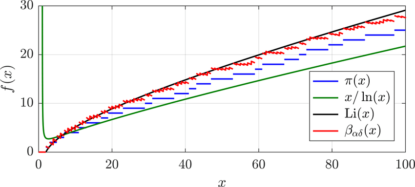
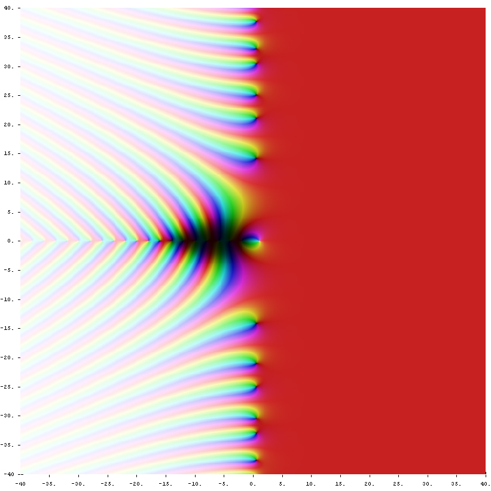

Collatz-Problem
Ablauf
- Suche dir eine zufällige Zahl $n \in \mathbb{N} \setminus \{0\}$
- Wenn $n \textrm{ mod } 2 = 0 \longrightarrow n$ nimmt $\frac{n}{2}$ an
- Wenn $n \textrm{ mod } 2 = 1 \longrightarrow n$ nimmt $3n + 1$ an
- Vorgang wiederholen
Beispiele
- $5 \rightarrow 16 \rightarrow 8 \rightarrow 4 \rightarrow 2 \rightarrow 1 \rightarrow 4 \rightarrow \, ... $
- $8 \rightarrow 4 \rightarrow 2 \rightarrow 1 \rightarrow 4 \rightarrow \, ...$
Folgerung
- Jede mögliche Zahl $n \in \mathbb{N} \setminus \{1\}$ endet im Folgeschema $4 \rightarrow 2 \rightarrow 1 \rightarrow \, ...$
- Problem: nicht bewiesen
Statistiken


Collatz-Graphen
- $f: \mathbb{N} \mapsto \mathbb{N}$ bildet den Collatz-Graphen einer zahlentheoretischen Funktion ab.
- Nachfolgerabbildung: \[s: \mathbb{N} \mapsto \mathbb{N}; \, s(n) = n + 1\]
Probleme mit 0
Teilen durch 0
Teilen durch 0
\begin{align*} \lim\limits_{\underset{x < 0}{x \to 0}} \frac{n}{x} &= - \infty \\ \lim\limits_{\underset{x > 0}{x \to 0}} \frac{n}{x} &= + \infty \\ \end{align*}
Teilen durch 0
\begin{align*} \lim\limits_{\underset{x < 0}{x \to 0}} \frac{n}{x} &= - \infty \\ \lim\limits_{\underset{x > 0}{x \to 0}} \frac{n}{x} &= + \infty \\ \lim\limits_{\underset{x < 0}{x \to 0}} \frac{n}{x} &\neq \lim\limits_{\underset{x > 0}{x \to 0}} \frac{n}{x} \\ - \infty &\neq + \infty \end{align*}
Teilen durch 0
\begin{align*} \lim\limits_{\underset{x < 0}{x \to 0}} \frac{n}{x} &= - \infty \\ \lim\limits_{\underset{x > 0}{x \to 0}} \frac{n}{x} &= + \infty \\ \lim\limits_{\underset{x < 0}{x \to 0}} \frac{n}{x} &\neq \lim\limits_{\underset{x > 0}{x \to 0}} \frac{n}{x} \\ - \infty &\neq + \infty \\ \Rightarrow \frac{n}{0} &= n. d. \end{align*}
0⁰
0⁰ - Grenzwertbetrachtung
\begin{align*} \lim\limits_{\underset{x > 0}{x \to 0}} x^x &= 1 \\ \lim\limits_{\underset{x < 0}{x \to 0}} x^x &= -1 \end{align*}
0⁰ - Grenzwertbetrachtung
\begin{align*} \lim\limits_{\underset{x > 0}{x \to 0}} x^x &= 1 \\ \lim\limits_{\underset{x < 0}{x \to 0}} x^x &= -1 \\ \lim\limits_{\underset{x > 0}{x \to 0}} x^x &\neq \lim\limits_{\underset{x < 0}{x \to 0}} \\ 1 &\neq -1 \\ \end{align*}
0⁰ - Grenzwertbetrachtung
\begin{align*} \lim\limits_{\underset{x > 0}{x \to 0}} x^x &= 1 \\ \lim\limits_{\underset{x < 0}{x \to 0}} x^x &= -1 \\ \lim\limits_{\underset{x > 0}{x \to 0}} x^x &\neq \lim\limits_{\underset{x < 0}{x \to 0}} \\ 1 &\neq -1 \\ \Rightarrow 0^0 &= n.d. \\ \end{align*}
0⁰ - Reversibles potenzieren
0⁰ - Reversibles potenzieren
\begin{align*} 5^3 &= \frac{5^4}{5} = 5 \cdot 5 \cdot 5 = 125 \\ 5^2 &= \frac{5^3}{5} = 5 \cdot 5 = 25 \\ 5^1 &= \frac{5^2}{5} = 5 = 5 \\ 5^0 &= \frac{5}{5} = 1 \end{align*}
0⁰ - Reversibles potenzieren
\begin{align*} 5^3 &= \frac{5^4}{5} = 5 \cdot 5 \cdot 5 = 125 \\ 5^2 &= \frac{5^3}{5} = 5 \cdot 5 = 25 \\ 5^1 &= \frac{5^2}{5} = 5 = 5 \\ 5^0 &= \frac{5}{5} = 1 \\ 0^0 &= \frac{0}{0} = n.d. \end{align*}
Primzahlen
Definition
- Für eine natürliche Zahl $N \in \mathbb{N} \setminus \{0\,;\,1\}$ gilt $N \in \mathbb{P}$, wenn für jede Zahl $n_j \in \mathbb{N} \setminus \{0\,;\,1\,;\,N\}$ gilt: \[ N \textrm{ mod } n_j \neq 0\]
Erschließung/Errechnung
Mersennesche Zahlen
- Für eine Zahl $N \in \mathbb{N}$ der Form \[ N = 2^n - 1;\, n \in \mathbb{N}\] kann $N \in \mathbb{P}$ nur dann gelten, wenn $n \in \mathbb{P}$ gilt.
- $\Longrightarrow$ Zahlen der Form \[ M_p := 2^p - 1; \, p \in \mathbb{P} \] heißen $Mersennesche\,Zahlen$, die allerdings nicht zwingend Teil der Menge $\mathbb{P}$ sind.
Beispiele für Mersennesche Primzahlen
- \begin{align*} M_2 &= 2^2 - 1 = 3 \\ M_3 &= 2^3 - 1 = 7 \\ M_5 &= 2^5 - 1 = 31 \\ M_7 &= 2^7 - 1 = 127 \\ \end{align*}
Beispiele für Mersennesche Nicht-Primzahlen
- \begin{align*} M_{11} &= 2^{11} - 1 = 23 \cdot 89 = 2047 \\ M_{23} &= 2^{23} - 1 = 47 \cdot 178481 = 8388607 \end{align*}
Fermatsche Zahlen
- Für eine Zahl $N \in \mathbb{N}$ der Form \[ N = 2^n + 1;\, n \in \mathbb{N} \] kann $N \in \mathbb{P}$ nur gelten, wenn $n = 2^m;\, m \in \mathbb{N}$ gilt.
- $\Longrightarrow$ Zahlen der Form \[ F_n := 2^{2^n} + 1\] heißen $Fermatsche\,Zahlen$, die allerdings nicht zwingend Teil der Menge $\mathbb{P}$ sind.
Beispiele für Fermatsche Primzahlen
- \begin{align*} F_1 &= 2^{2^1} + 1 = 2^{2} + 1 = 5 \\ F_2 &= 2^{2^2} + 1 = 2^{4} + 1 = 17 \\ F_3 &= 2^{2^3} + 1 = 2^{8} + 1 = 257 \\ F_4 &= 2^{2^4} + 1 = 2^{16} + 1 = 65537 \\ \end{align*}
Beispiele für Fermatsche Nicht-Primzahlen
- \begin{align*} F_5 &= 2^{32} + 1 = 641 \cdot 6700417 = 4294967297 \\ F_6 &= 2^{64} + 1 = 274177 \cdot 67280421310721 = 1,844674407 \cdot 10^{19} \end{align*}
Riemannsche Vermutung
Pifunktion
- Die Pifunktion $\pi(x)$ beschreibt für $x_n$ die Anzahl an Primzahlen, die Teil des Intervalls $[0;\,x_n]$ sind.
Pifunktion - Näherungen
- \[ \frac{x}{\ln(x)} \] \[ \textrm{li}(x) = \int\limits_{0}^{x} \frac{\textrm{d}\,t}{\textrm{ln}\,t} \]
Pifunktion - Näherungen
asymptotisch äquivalent
Primzetafunktion
- Für eine Zahl $s \in \mathbb{C}; \textrm{Re}(s) > 1$ gilt: \begin{align*} P(s) &= \sum\limits_{p \in \mathbb{P}} \frac{1}{p^s} \\ P(s) &= \textrm{log}(\zeta(s)) \end{align*}
Riemmansche Zetafunktion
- Für alle $z \in \mathbb{C}$ mit $Re(z) > 1$ gilt \[ \zeta(z) = \prod_{p \in \mathbb{P}} {\frac{1}{1 - \frac{1}{p^z}}} = \sum_{n=1}^{\infty} \frac{1}{n^z}\]
Riemmansche Zetafunktion
- Für alle $z \in \mathbb{C}$ mit $Re(z) > 1$ gilt \[ \zeta(z) = \prod_{p \in \mathbb{P}} {\frac{1}{1 - \frac{1}{p^z}}} = \sum_{n=1}^{\infty} \frac{1}{n^z}\] $Beweisidee:$ Für eine feste Primzahl $p \in \mathbb{P}$ kann der Faktor in obigen Produkt in eine geometrische Reihe \[ \frac{1}{1 - \frac{1}{p^s}} = \sum_{n=0}^{\infty} {\frac{1}{p^{nz}}} \] entwickelt werden.
Riemmansche Zetafunktion
- $Beweisidee:$ Für eine feste Primzahl $p \in \mathbb{P}$ kann der Faktor in obigen Produkt in eine geometrische Reihe \[ \frac{1}{1 - \frac{1}{p^s}} = \sum_{n=0}^{\infty} {\frac{1}{p^{nz}}} \] entwickelt werden. Wenn also $p_1, p_2, ... p_n$ die ersten $n$ Primzahlen sind, so ist \begin{align*} \prod_{k=1}^{n} {\frac{1}{1 - \frac{1}{{p_k}^z}}} &= \sum_{k_1=0}^{\infty} {\frac{1}{{p_1}^{k_1 z}}} \cdot \sum_{k_2=0}^{\infty} {\frac{1}{{p_2}^{k_2 z}}} \cdot\cdot\cdot \sum_{k_n=0}^{\infty} {\frac{1}{{p_n}^{k_n z}}} \\ &= \sum_{k_1=0}^{\infty} \cdot\cdot\cdot \sum_{k_n=0}^{\infty} \frac{1}{({p_1}^{k_1} \cdot\cdot\cdot {p_n}^{k_n})^z} \\ &= \cdot\cdot\cdot \end{align*}
Riemmansche Zetafunktion
- Für alle $z \in \mathbb{C}$ mit $\textrm{Re}(z) < 0$ gilt \[ \zeta(1-z) = \pi^{-z} \cdot 2^{1-z} \cdot \Gamma(z) \cdot\left(\frac{\pi z}{2}\right) \cdot \zeta(z) \] Außerdem ist die $\Gamma(z)$ durch \[ \Gamma(z) = \lim\limits_{n \to \infty} \frac{n! \cdot n^z}{\prod\limits_{k=0}^{\infty} (z+k)} \] definiert.
Triviale Nullstellen
- Triviale Nullstellen $N_j$ sind solche, für die $\textrm{Re}(N_j) < 0$, $\textrm{Im}(N_j) = 0$ und $N_j \textrm{ mod } 2 = 0$ gilt.
- Komplexe Nullstellen $N_j$ sind solche, für die $\textrm{Re}(N_j) = \frac{1}{2}$ gilt.
Riemannsche Zetafunktion
Riemannsche Vermutung
- $Es\,gibt\,keine\,Nullstellen\,anderer\,Art\,und\,alle\,nichttrivialen\\Nullstellen\,der\,Zetafunktion\,liegen\,auf\,einer\,Geraden\,parallel\\zur\,imaginären\,Achse.$